角落小夥伴電影
|
| |
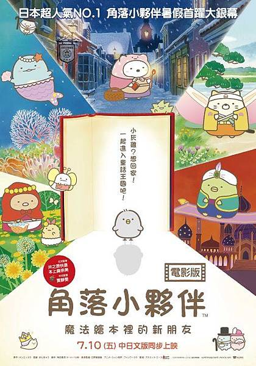電影集結了所有初代經典人氣角色，以大家常去的咖啡店為背景，進而將角色們引入魔法繪本，展開了各式各樣的冒險! 如同其他動畫電影，本片的類型主軸也是尋找自我的成長電影，但看似喜劇的本片卻意外催淚，尤其相比同型電影引萬千青少年追逐青春、追憶青春 |
角色介紹 |
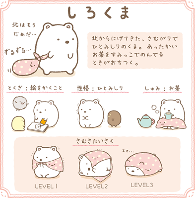
白熊【しろくま 】
來自北方但是非常怕冷，還在北方的時候認識了企鵝告訴她南方很溫暖，便帶著有表情的點點裹布來到南方，生性害羞怕生，擅長畫畫，覺得在角落喝熱茶很放鬆，根據寒冷的程度有不同的裹布禦寒方式，蓋起來、捲起來、包起來 |
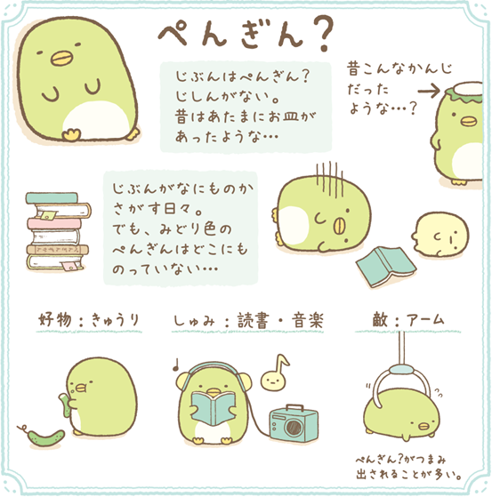
企鵝?【ぺんぎん？】
原本是一隻河童，但是弄丟了自己頭上的盤子，並不知道自己是河童。總覺得自己是一隻企鵝，但是看了很多企鵝圖鑑都找不到跟自己一樣是綠色的企鵝，所以沒有甚麼自信，很愛吃小黃瓜(かっぱ巻き小黃瓜卷就是河童捲)，喜歡讀書和聽音樂，熱愛觀察身邊的事物，有一個特性就是經常捉弄其他小夥伴，是個很淘氣的角色 |
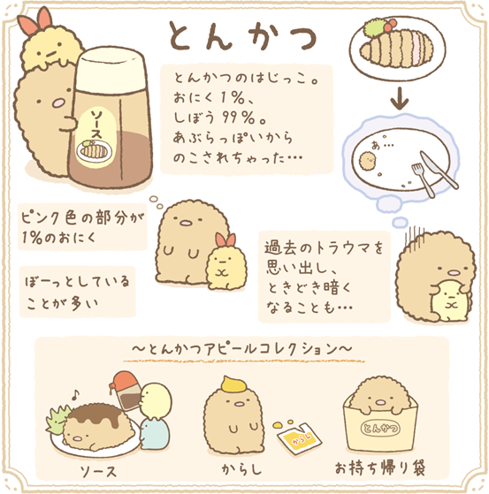
炸豬排【とんかつ 】
炸豬排就是所謂被人吃剩的炸豬排邊邊，炸豬排全身上下只有1%是瘦肉，其他都是油脂…所以他很希望能被吃掉><那炸物類有一個很可愛的是當大家去泡溫泉時他們不能泡，因為他們要泡油，不然會軟掉XD |

貓咪【ねこ】
生性害羞又懦弱的貓，常常躲在角落裡抓牆(角落的牆表示很無辜)，個性謙和常常關照旁人的感受，但有時候也會因為這樣搞得自己很累(是個心思很細膩的角色呀)，很在意體型但是很愛吃，經常打瞌睡，夢想擁有纖細的身形和常常的尾巴，喜歡貓罐頭、魚和雜草 |
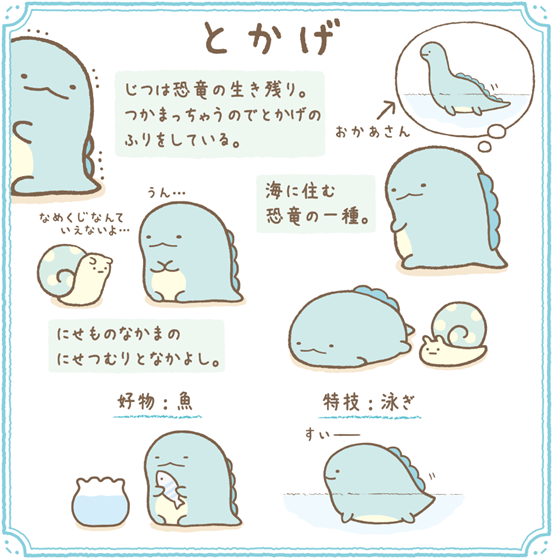
蜥蜴【とかげ 】
蜥蜴的真實身分是倖存的恐龍，因為怕被別人發現而抓走，所以才假裝自己是蜥蜴。在官方書中，可以發現一開始角落小夥伴的主角是另外四隻，是之後在不同的系列中，漸漸將蜥蜴納入主角群裡。那蜥蜴之前是住在海裡，來到陸地後很想念他的媽媽。 |
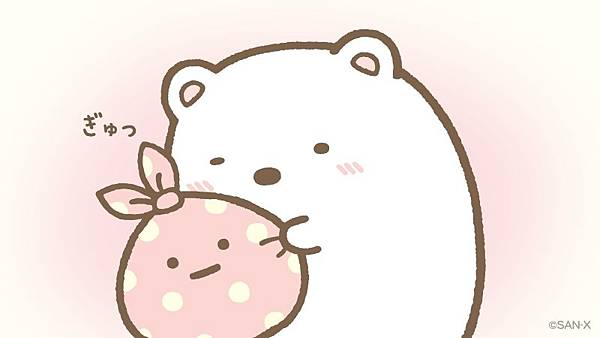
裹布【ふろしき 】
從白熊出生時就一直陪伴著白熊了，所以是白熊重要的朋友。那裹布用途很多，很常看見裹布成為白熊的行李袋或是防寒衣物，有時候也可以看見裹不被當作野餐墊XD |
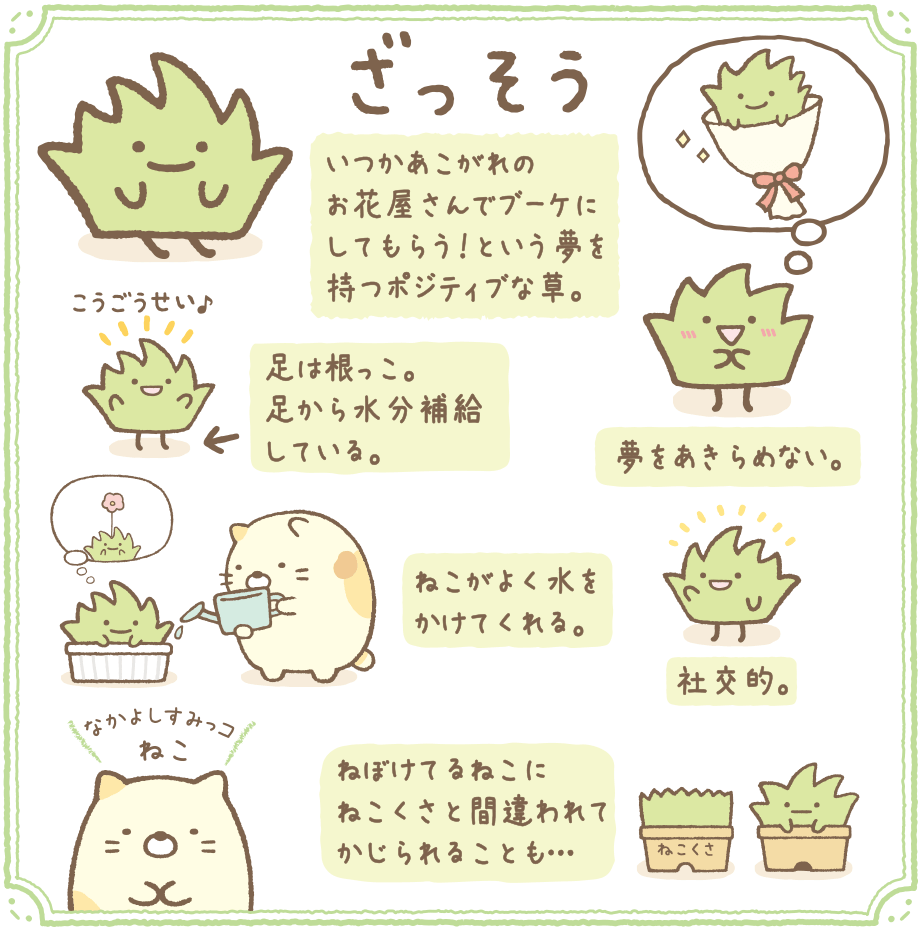
小草【ざっそう】
貓的好友，據說缺水的雜草被貓救起帶去角落，根部是雙腳也可以吸收水分人生夢想是有一天可以被製作成花束送給別人，希望自己能開出花來，但是常常被踩來踩去所以長不大喜歡交朋友，曾經被沒睡醒的貓當成貓草咬了一口 |
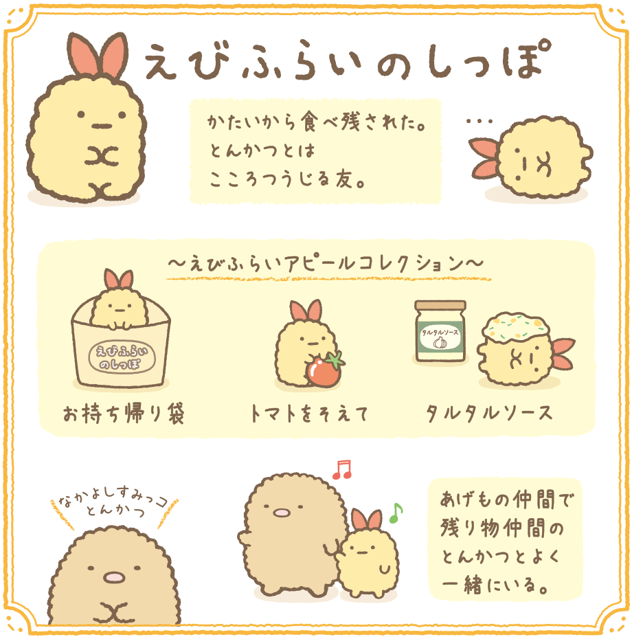
炸蝦【えびふらいのしっぽ 】
因為太硬所以被吃剩下，和炸豬排是心靈相通的好友炸蝦尾的經典推薦 – 可以搭配使用外帶包、小番茄和塔塔醬經常和同為炸物也被剩下的炸豬排再一起 |
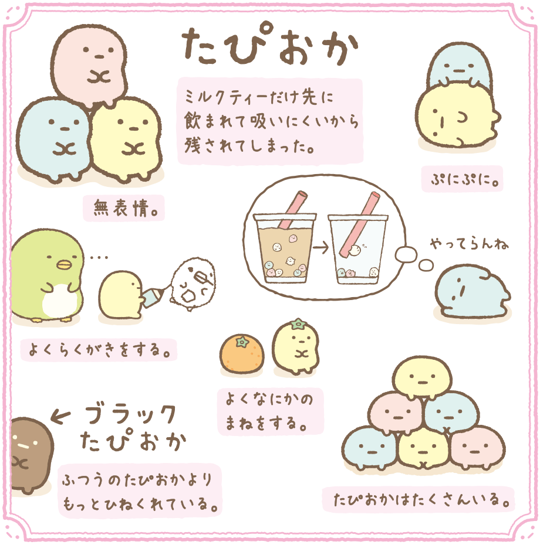
珍珠(又名粉圓)【たぴおか 】
面無表情的粉圓們，在每次奶茶被喝光之後剩下來……😔藍色粉圓個性彆扭覺得自己每次都被剩下真的是受夠了，黃色粉圓喜歡模仿別人像是橘子🍊，黑色粉圓比其他粉圓個性更加彆扭 |
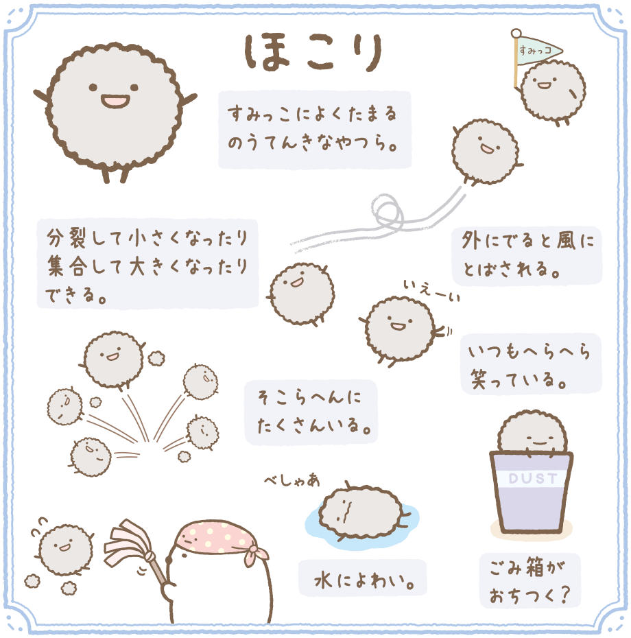
小灰塵(又名飛塵)【ほこり】
群無憂無慮且常常聚集在角落，可以分裂成小飛塵也可以聚集成大飛塵一出門就會被風出走，待在垃圾桶很安心?弱點就是怕水💧 |
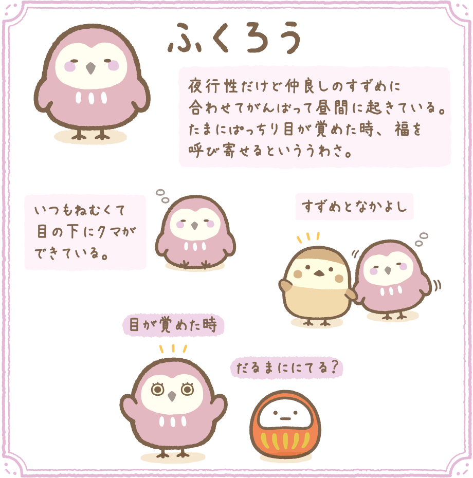
小麻雀【すずめ】
一支很普通的麻雀🐦，常常在附近飛來飛去或是亂走忍不住會去偷啄豬排，對於裹布裡面到底裝了甚麼很感興趣，但是裹布對於麻雀的好奇感到害怕😰 |